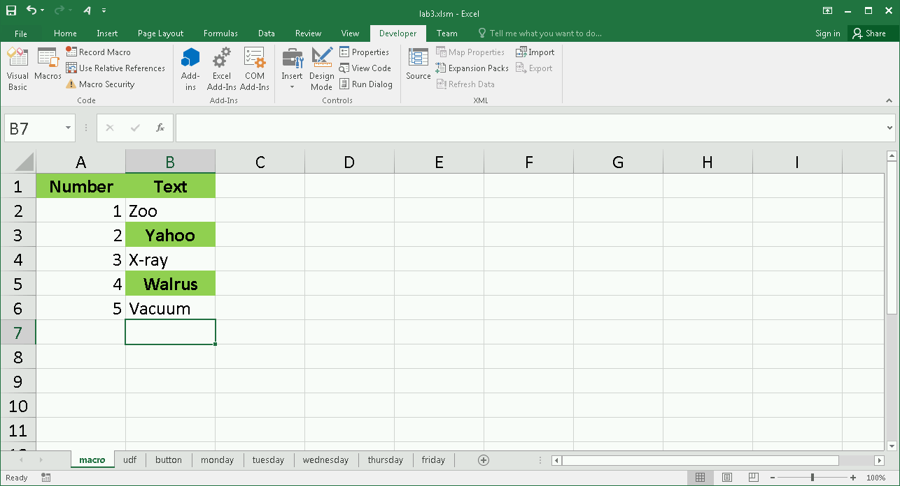
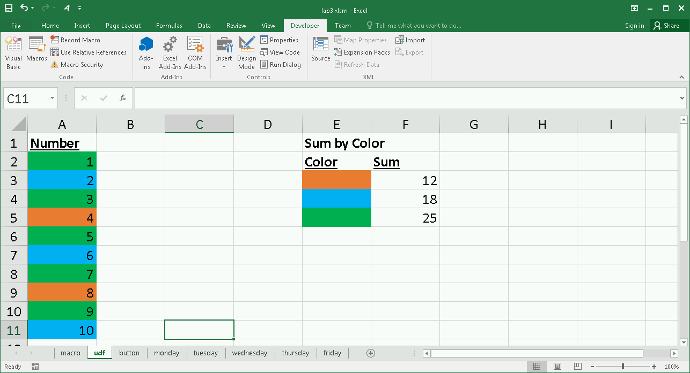
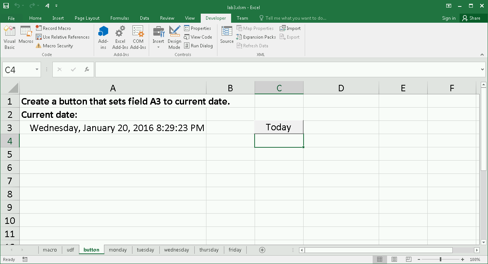
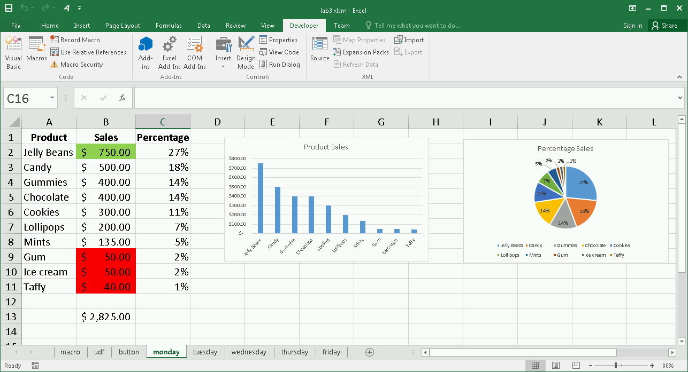
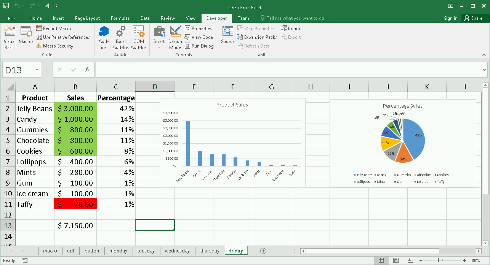

DATA 301 - Introduction to Data Analytics
Lab 3: Excel - Macros and VBA Scripting
In this lab, we will create macros and user-defined functions to automate tasks and expand the capabilities of Microsoft Excel.
Objectives
- Create a macro using the macro recorder.
- Execute a recorded macro to automate a repetitive task.
- Create a user-defined function in VBA using the Visual Basic Editor.
- Use a user-defined function in a formula.
- Add a button (user interface component) to a spreadsheet.
- Have a button respond to a click event to run a macro.
Analysis Problem and Goals
This scenario involves automating a repetitive analysis. Sales data is being given to the data analyst every day in text form. The boss wants a specific format of the data in Excel including charts. Although this only takes less than 10 minutes each day, the same tasks are done every day. Using macros, we will see a better way.
For this lab, a starter Excel file has been created: starter Lab 3 Excel File. There are also text files of sales data for each day of the week: monday_sales.txt, tuesday_sales.txt, wednesday_sales.txt, thursday_sales.txt, and friday_sales.txt.
Marking and Evaluation
Marks are awarded by precisely following these requirements:
- Record a Simple Macro (1 mark) - record a macro called BoldGreen with short cut key of Ctrl+Shift+G that will bold, center, and put a green background for the current cell. Test your macro on any of the cells in the macro sheet.
- Record a Complex Macro (4 marks) - record a macro with name SaveRepetitiveWork that does the following tasks:
- Opens the file sales.txt in the current directory and imports it into Excel. (0.5 marks)
- Formats the two header fields to be bold and center. (0.25 marks)
- Uses conditional formatting so sales cells with values < 100 have a red background and greater than 500 have a green background. (0.5 marks)
- Sorts the data in descending order by sales. (0.25 marks)
- In cell B13 creates a sales total. Make sure all sales show as currency formatted. (0.25 marks)
- Creates a column called Percentage that computes the percent sales of each item. (0.25 marks)
- Creates a bar chart with title Product Sales. (0.5 marks)
- Creates a pie chart with title Percentage Sales. (0.5 marks)
- Run your macro five times; once for each day of sales data. For example, to process monday_sales.txt rename it as sales.txt then run your macro. Take the resulting new sheet and move it into your lab3.xlsm workbook and rename to monday. (Note: To move, right-click on sheet name and select Move or Copy then select the lab3 workbook.) Repeat for the other 4 days. (1 mark)
- Suggestion: Try to do these steps first then record using macro recorder. You can also record some of the tasks individually and copy/paste code to build a larger macro.
- Create and Use a User-Defined Function (2 marks) - the udf sheet is setup for creating and using a user-defined function. Steps:
- In the Visual Basic Editor, in module1 there is a function already created called SUMCOLOR for you to edit. This function is similar to one in the notes except that instead of the color being given to sum the cells, the color is retrieved from the color of the cell given in the second argument. (1 mark)
- Use the function SUMCOLOR to create formulas for cells F3:F5 that sum the cells that are orange, blue, and green. (1 mark)
- Buttons and Events (2 marks) - in the sheet called button add a button that when clicked will call a macro called setDate that sets the cell A3 to the current date and time in the format shown in the screenshot. You will need to write the setDate macro.
- Bonus (1 mark) - add a sheet called bonus and in it describe some additional work that you did such as creating an interesting macro, adding other controls besides a button, or some useful user-defined function you wrote in VBA code.
When complete, submit your Excel file named lab3_(yourstudentnum).xlsm (e.g. lab3_11111111.xlsm) using Connect.
Screenshots
macro sheet

udf sheet

button sheet

monday sheet

friday sheet

 Home
Home